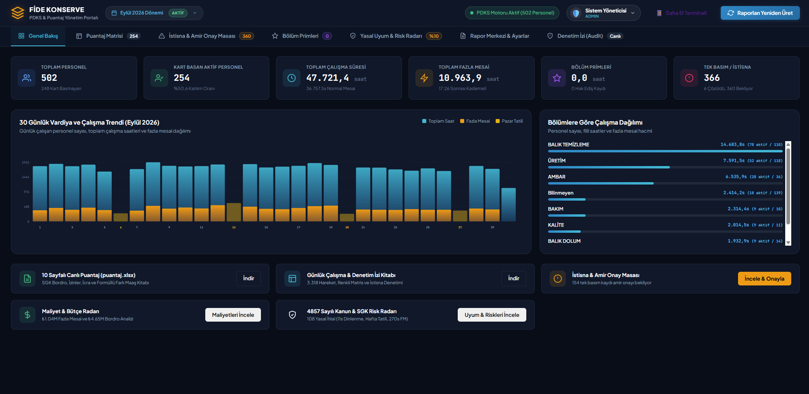

Ekran Görüntüleri & Modüller:
Akıllı Puantaj ve PDKS Sistemi
Donanım terminallerinden gelen karmaşık personel giriş-çıkış kart verilerini analiz ederek, İnsan Kaynakları ve Muhasebe departmanları için vardiya, fazla mesai ve puantaj hesaplama sürecini tam otomatik hale getiren kurumsal yazılım.
%100 Otomatik
Saniyeler İçinde Hesaplama
ERP & Yasal Uyum
Sıfır Hata Toleransı
Çoklu Vardiya
Pazar & Gece Mesaisi
-
Otomatik PDKS Analizi: Ham terminal loglarını temizler, eksik veya unutulan kart basımlarını anında tespit eder.
-
Vardiya & Mesai Motoru: Normal çalışma, hafta sonu (pazar) ve gece vardiyası mesailerini yasal mevzuata tam uyumlu hesaplar.
-
Gelişmiş BI & Excel Raporlama: Detaylı puantaj cetvelleri, günlük çalışma dökümleri ve ERP'ye hazır maliyet analizleri üretir.